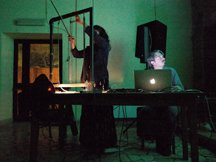
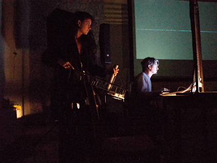
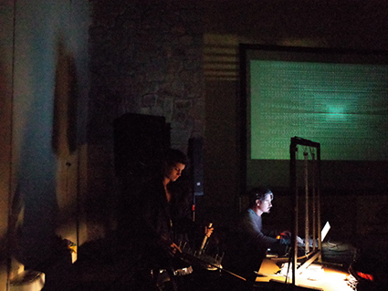

Le projet MK est le résultat d'une collaboration entre Marion Roche et Matteo Olivo, producteur de musique électronique et artiste visuel italien.
Depuis 2017 ils ont réalisé de nombreuses performances audiovisuelles et des installations intéractives pour des expositions et des galeries.


